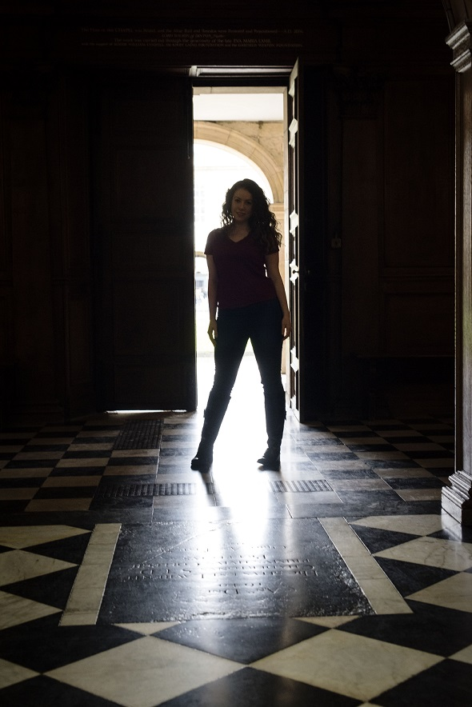

Georgina
Skinner
Contact
Gallery
Résumé
Home
Contact
Height: 5’4’’
Playing age: 16-25
Voice type: lyric soprano
Vocal range: G3 to E6
Cambridge University graduate student and classically trained soprano specialising in musical theatre and opera
